<div class="media" #bigAside style=" z-index: 1;" *ngIf="removeAside() === this.componentChild" >
  <nav
  style="background-color:#e2edf3; min-height: 100vh; "
  class="nav d-lg-flex flex-column  float-start  collapse navbar-collapse "
  id="aside"
  >
  <!-- Load the current module's components -->
  <ul class="nav navbar-nav flex-column " >
    <li class="nav-item p-3 hover-aside" [ngClass]="isActiveRouter(subComponent.path)? 'hover-aside-focus opacity-100' : 'opacity-50' "  *ngFor="let subComponent of componentChild">
      <!-- Managers and admins components -->
    <a [routerLink]="subComponent.path" class="navbar-brand" *ngIf="rol === 'LAB MANAGER' || rol === 'ADMIN'">
      <div class=" text-center rounded text-white border p-2" style="background-color: #afb9be;" >
        
      <span class="m-2">{{subComponent.route}}</span>
      </div>
    </a>
    <!-- Normal users components -->
    <a [routerLink]="subComponent.path" class="navbar-brand" *ngIf="subComponent.rol === rol">
      <div class=" text-center rounded text-white border p-2" style="background-color: #afb9be; " >
        
      <span class="m-2">{{subComponent.route}}</span>
      </div>
    </a>
    </li>
  </ul>
  </nav>

  <!-- Responsive button in small screens -->
  <div class="nav navbar-expand-lg flex-column justify-content-center vh-100 float-start">
  <button
    class="navbar-toggler py-2 px-1 flex-row rounded-end-4 "
    style="background-color: #afb9be;"
    type="button"
    data-bs-toggle="collapse" 
    data-bs-target="#aside"
    aria-controls="aside"
    aria-hidden="false"
    aria-label="Toggle navigation"
    >
    
  </button>

  </div>
</div>